The following pictures show n circles with the largest possible sum of radii packed inside a unit square.
1.
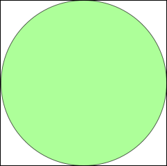
2.
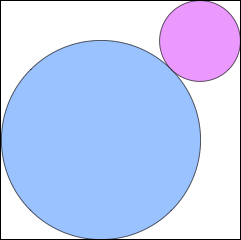
3.
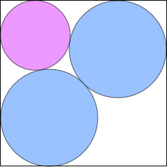
Σ r = 1/2 = .500
Trivial.
Σ r = 2 – √2 = .585+
Trivial.
A continuum of solutions.
Σ r = .796+
Found by David W. Cantrell
in April 2011.
4.
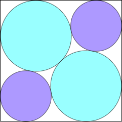
5.
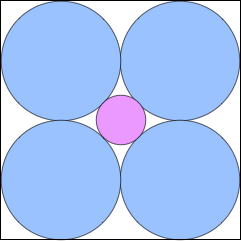
6.
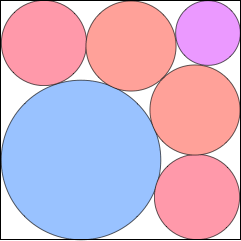
Σ r = 1.006+
Found by David W. Cantrell
in April 2011.
Σ r = (3 + √2)/4 = 1.103+
Found by David W. Cantrell
in April 2011.
Σ r = 1.202+
Found by David W. Cantrell
in April 2011.
7.
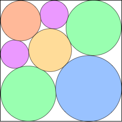
8.
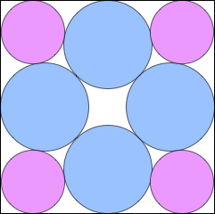
9.
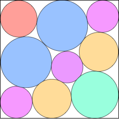
Σ r = 1.306+
Found by David W. Cantrell
in April 2011.
Σ r = 1.423+
Found by David W. Cantrell
in April 2011.
Σ r = 1.524+
Found by David W. Cantrell
in April 2011.
10.
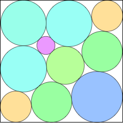
11.
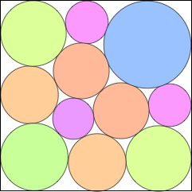
12.
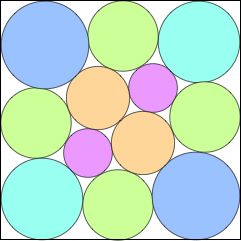
Σ r = 1.591+
Found by David W. Cantrell
in April 2011.
Σ r = 1.680+
Found by David W. Cantrell
in April 2011.
Σ r = 1.765+
Found by David W. Cantrell
in April 2011.
13.
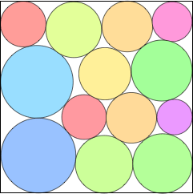
14.
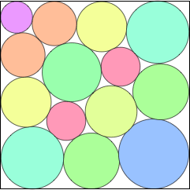
15.
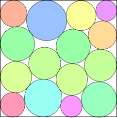
Σ r = 1.829+
Found by David W. Cantrell
in April 2011.
Σ r = 1.905+
Found by David W. Cantrell
in April 2011.
Σ r = 1.980+
Found by David W. Cantrell
in April 2011.
16.
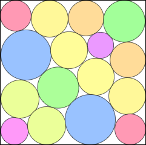
17.
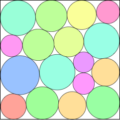
18.
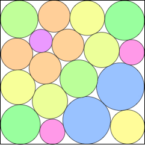
Σ r = 2.053+
Found by David W. Cantrell
in April 2011.
Σ r = 2.111+
Found by David W. Cantrell
in April 2011.
Σ r = 2.178+
Found by David W. Cantrell
in April 2011.
19.
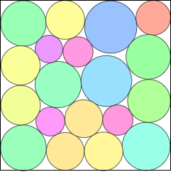
20.
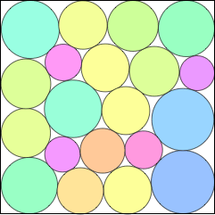
21.
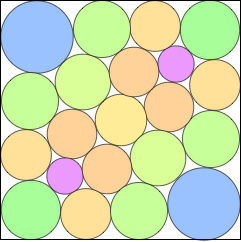
Σ r = 2.236+
Found by David W. Cantrell
in April 2011.
Σ r = 2.301+
Found by David W. Cantrell
in July 2011.
Σ r = 2.362+
Found by David W. Cantrell
in July 2011.
22.
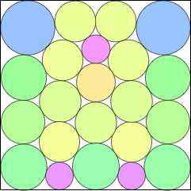
23.
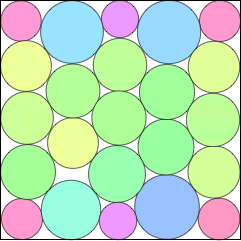
24.
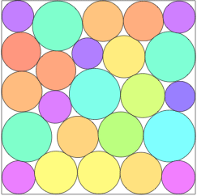
Σ r = 2.420+
Found by David W. Cantrell
in July 2011.
Σ r = 2.478+
Found by David W. Cantrell
in July 2011.
Σ r = 2.530+
Found by Eckard Specht
in January 2012.
25.
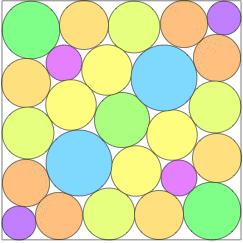
26.
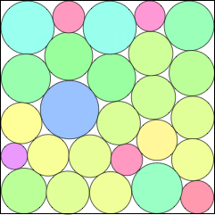
27.
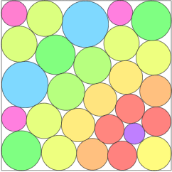
Σ r = 2.587+
Found by David W. Cantrell
in January 2012.
Σ r = 2.634+
Found by David W. Cantrell
in July 2011.
Σ r = 2.685+
Found by David W. Cantrell
in January 2012.
28.
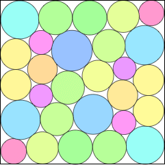
29.
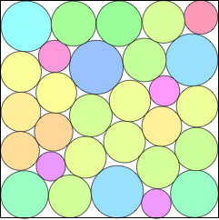
30.
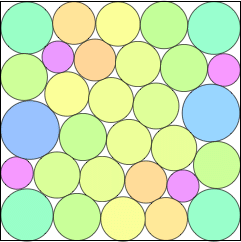
Σ r = 2.737+
Found by David W. Cantrell
in July 2011.
Σ r = 2.790+
Found by David W. Cantrell
in July 2011.
Σ r = 2.842+
Found by David W. Cantrell
in July 2011.
31.
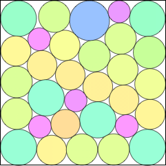
32.
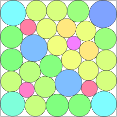
Σ r = 2.889+
Found by David W. Cantrell
in July 2011.
Σ r = 2.939+
Found by Timo Berthold et al
in January 2026.